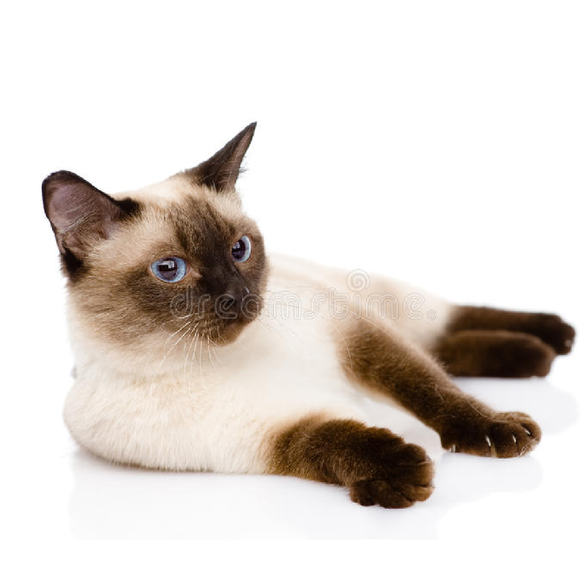
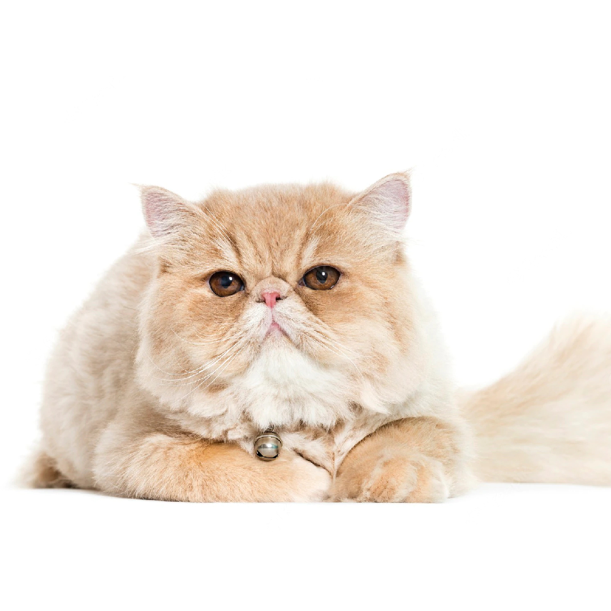
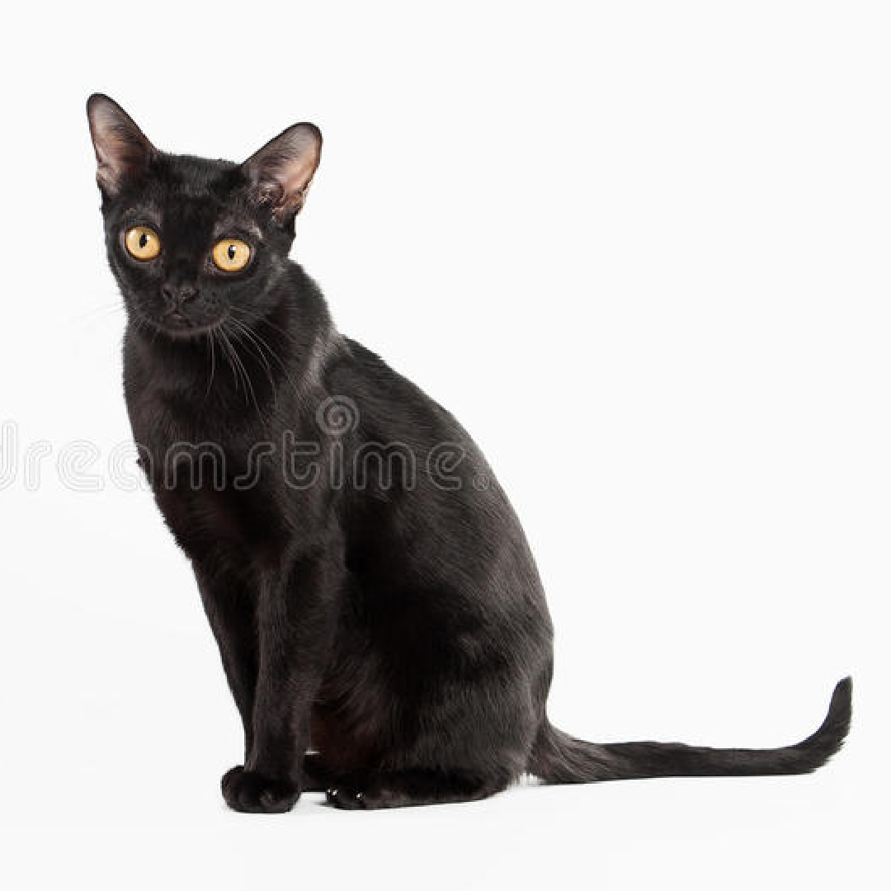

Best Cat Breeds
| British Shorthair. | Siamese Cat | Maine Coon | Persian Cat | Bombay Cat |
|
 | |
 |  |
| • The British Shorthair is a medium-sized to large cat and she is a very powerful one. She is heavily muscled and has heavy boning. She has a rounded, thick appearance. | • The Siamese is a long, elegant cat. The body is long, the neck is long, the legs and tail are long. | • The Maine Coon is medium to large, and males are larger than females. The body is long and rectangular and the tail is also long. For these reasons, she may look much larger than she is. | • The Persian is usually a medium sized cat, although she is massive and heavily boned. With her masses of fur, she can appear larger than she really is. | • The Bombay is a medium-sized cat. When you pick her up, she feels considerably heavier than she appears. |
| ADOPT NOW! | ADOPT NOW! | ADOPT NOW! | ADOPT NOW! | ADOPT NOW! |
|---|---|---|---|---|
| Color:
|
Color:
|
Color:
|
Color:
|
Color:
|